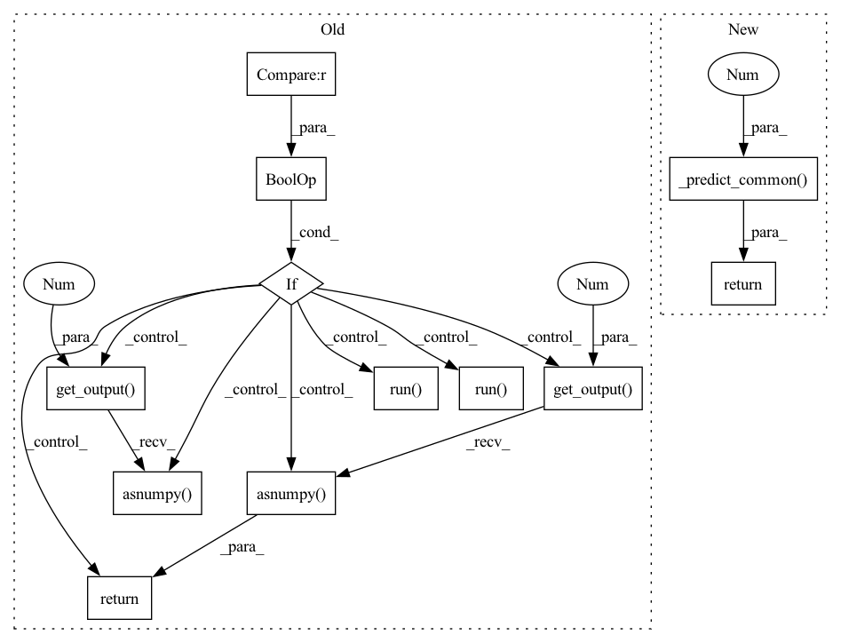

Pattern ID :5704

Before Change
def _decision_function(self, *inputs):
if self._last_iteration and self._remainder_model is not None:
self._remainder_model.run(**self._to_tvm_tensor(*inputs))
return self._remainder_model.get_output(1).asnumpy().ravel()
else:
self.model.run(**self._to_tvm_tensor(*inputs))
return self.model.get_output(1).asnumpy().ravel()
After Change
def _decision_function(self, *inputs):
out = self._predict_common(1, *inputs)
return out.ravel()
In pattern: SUPERPATTERN
Frequency: 4
Non-data size: 12
Instances
Fragment ID: 20035633
Project Name: microsoft/hummingbird
Commit Name: 6cab8ee8043957814fb5d5282f0b4258477ae56f
Time: 2020-12-04
Author: masahi129@gmail.com
File Name: hummingbird/ml/_container.py
M Class Name: TVMSklearnContainerAnomalyDetection
N Class Name: TVMSklearnContainerAnomalyDetection
M Method Name: _decision_function(1)
N Method Name: _decision_function(1)
M Parent Class: SklearnContainerAnomalyDetection,TVMSklearnContainerRegression
N Parent Class: SklearnContainerAnomalyDetection,TVMSklearnContainerRegression
M File Name: hummingbird/ml/_container.py
N File Name: hummingbird/ml/_container.py
M Start Line: 571
M End Line: 576
N Start Line: 568
N End Line: 569
'>
Before Change
def _predict(self, *inputs):
if self._last_iteration and self._remainder_model is not None:
self._remainder_model.run(**self._to_tvm_tensor(*inputs))
return self._remainder_model.get_output(0).asnumpy().ravel()
self.model.run(**self._to_tvm_tensor(*inputs))
return self.model.get_output(0).asnumpy().ravel()
class TVMSklearnContainerClassification(TVMSklearnContainerRegression, SklearnContainerClassification):
After Change
def _predict(self, *inputs):
out = self._predict_common(0, *inputs)
return out.ravel()
class TVMSklearnContainerClassification(TVMSklearnContainerRegression, SklearnContainerClassification):
'>
Fragment ID: 20035617
Project Name: microsoft/hummingbird
Commit Name: 6cab8ee8043957814fb5d5282f0b4258477ae56f
Time: 2020-12-04
Author: masahi129@gmail.com
File Name: hummingbird/ml/_container.py
M Class Name: TVMSklearnContainerRegression
N Class Name: TVMSklearnContainerRegression
M Method Name: _predict(1)
N Method Name: _predict(1)
M Parent Class: SklearnContainerRegression,TVMSklearnContainer
N Parent Class: SklearnContainerRegression,TVMSklearnContainer
M File Name: hummingbird/ml/_container.py
N File Name: hummingbird/ml/_container.py
M Start Line: 545
M End Line: 549
N Start Line: 549
N End Line: 550
'>
Before Change
def _transform(self, *inputs):
if self._last_iteration and self._remainder_model is not None:
self._remainder_model.run(**self._to_tvm_tensor(*inputs))
return self._remainder_model.get_output(0).asnumpy()
self.model.run(**self._to_tvm_tensor(*inputs))
return self.model.get_output(0).asnumpy()
class TVMSklearnContainerRegression(TVMSklearnContainer, SklearnContainerRegression):
After Change
def _transform(self, *inputs):
return self._predict_common(0, *inputs)
class TVMSklearnContainerRegression(TVMSklearnContainer, SklearnContainerRegression):
'>
Fragment ID: 20035635
Project Name: microsoft/hummingbird
Commit Name: 6cab8ee8043957814fb5d5282f0b4258477ae56f
Time: 2020-12-04
Author: masahi129@gmail.com
File Name: hummingbird/ml/_container.py
M Class Name: TVMSklearnContainerTransformer
N Class Name: TVMSklearnContainerTransformer
M Method Name: _transform(1)
N Method Name: _transform(1)
M Parent Class: SklearnContainerTransformer,TVMSklearnContainer
N Parent Class: SklearnContainerTransformer,TVMSklearnContainer
M File Name: hummingbird/ml/_container.py
N File Name: hummingbird/ml/_container.py
M Start Line: 532
M End Line: 536
N Start Line: 540
N End Line: 540
'>
Before Change
def _predict_proba(self, *inputs):
if self._last_iteration and self._remainder_model is not None:
self._remainder_model.run(**self._to_tvm_tensor(*inputs))
return self._remainder_model.get_output(1).asnumpy()
self.model.run(**self._to_tvm_tensor(*inputs))
return self.model.get_output(1).asnumpy()
class TVMSklearnContainerAnomalyDetection(TVMSklearnContainerRegression, SklearnContainerAnomalyDetection):
After Change
def _predict_proba(self, *inputs):
return self._predict_common(1, *inputs)
class TVMSklearnContainerAnomalyDetection(TVMSklearnContainerRegression, SklearnContainerAnomalyDetection):
'>
Fragment ID: 20035640
Project Name: microsoft/hummingbird
Commit Name: 6cab8ee8043957814fb5d5282f0b4258477ae56f
Time: 2020-12-04
Author: masahi129@gmail.com
File Name: hummingbird/ml/_container.py
M Class Name: TVMSklearnContainerClassification
N Class Name: TVMSklearnContainerClassification
M Method Name: _predict_proba(1)
N Method Name: _predict_proba(1)
M Parent Class: SklearnContainerClassification,TVMSklearnContainerRegression
N Parent Class: SklearnContainerClassification,TVMSklearnContainerRegression
M File Name: hummingbird/ml/_container.py
N File Name: hummingbird/ml/_container.py
M Start Line: 558
M End Line: 562
N Start Line: 559
N End Line: 559